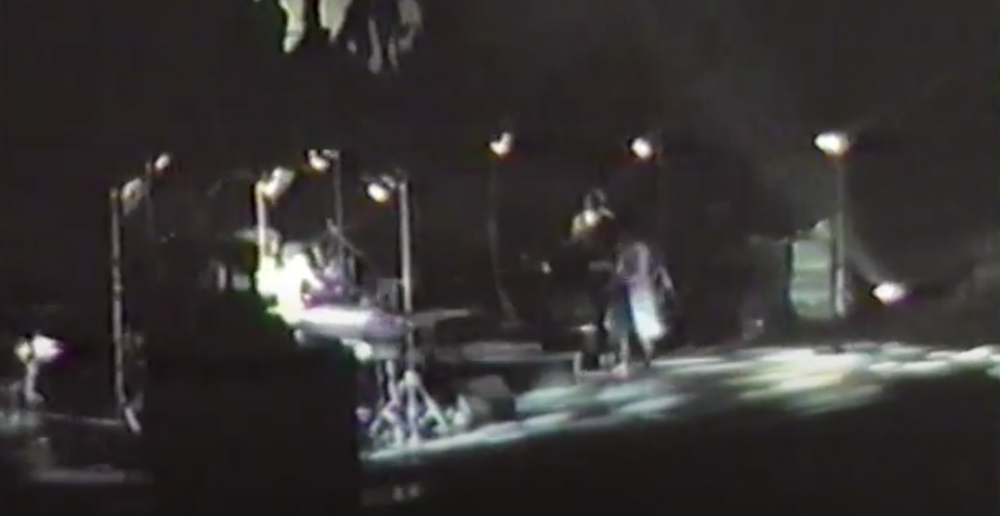
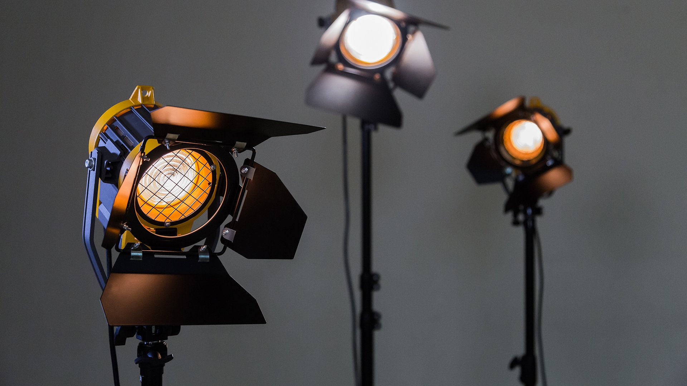
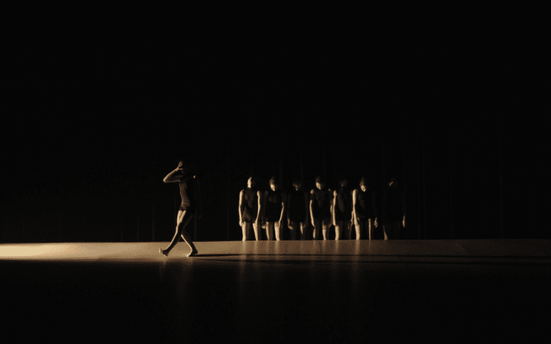
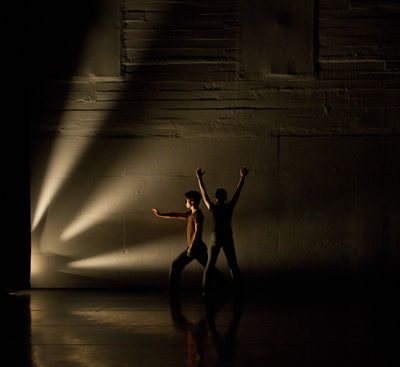

Screen Ideas for Jonny Greenwood festival show
I haven't had much info from Mr Grapes yet, but it seems like it will be a generic festival situation, with a screen (and projectors? still waiting on the spec). It will be necessarily simple, and given what you were saying focused on screen performance. If the examples here pique your fancy then I will develop some tools to process the video in a few weird ways for variety over the course of the performance.
As far as lighting goes, I don't know if there's the budget for taking extra elements in, but if there is there's only a handful of things I'd like to take.
-
Some photo floods on stands for close up lighting - this is an easy step to variety and making it look distinctive, if everyone else has been using the festival rig that is all in the ceiling and about power and throw. Some tracks using this look creates space between the performers. Can't find any really good image examples of what I mean, unfortunately, but here's a grainy shot from a Peter Gabriel gig, and a picture of the lighting fixtures I mean.


-
A group of lights to throw from low down on the side. I think having the option to change the 'shape' of the stage a bit will set the performance apart from what has gone before, and suit the tenor of some of the pieces being played. There are a few options, going from very simple up to a light box with some kind of large-scale diffusion on the front.


-
Some other floor lights downstage of the performers to throw some dramatic shadows.
Apart from these general ideas the lighting will be fairly static, centering on the idea of a strong single visual cue that complements each piece (possible with some gentle movement in, such as rotating gobos) rather then many changes, complemented by processed iMag on the screens.
Click on the links below for three ideas. These are created using video clips grabbed off YouTube, but for the show they would be live captured video, probably from static mounted GoPros or similar. Mouse click on the screen once you get there to start the action.
ASCII live video (low res live video converted to ASCII, opacity reacting to audio input)
Evolving Motion Detection Layers (greyscale video layered with a motion-detected colour processed [dependent on audio spectrum] version of the same, with evolving sin waves affecting various other features)
Multi-screen performance / script (if real scripts not allowed I can use / write something else)